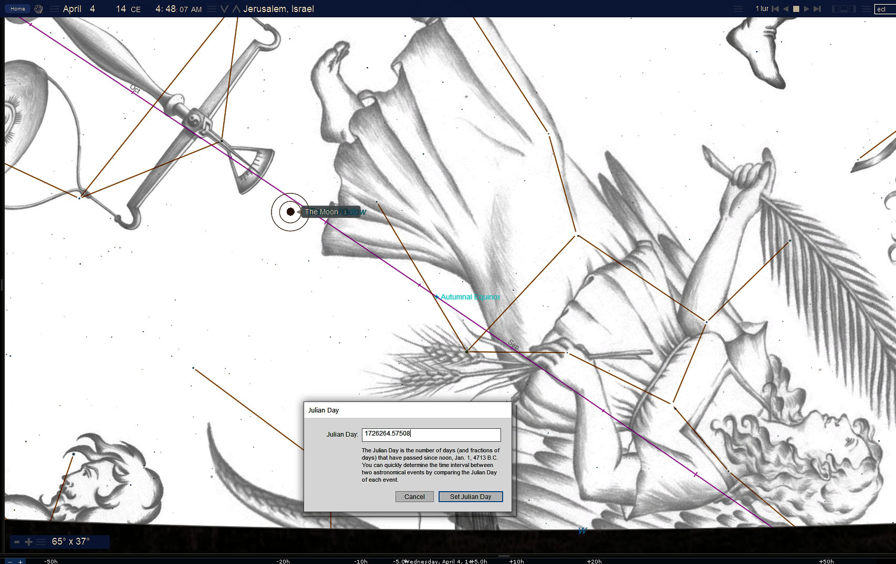
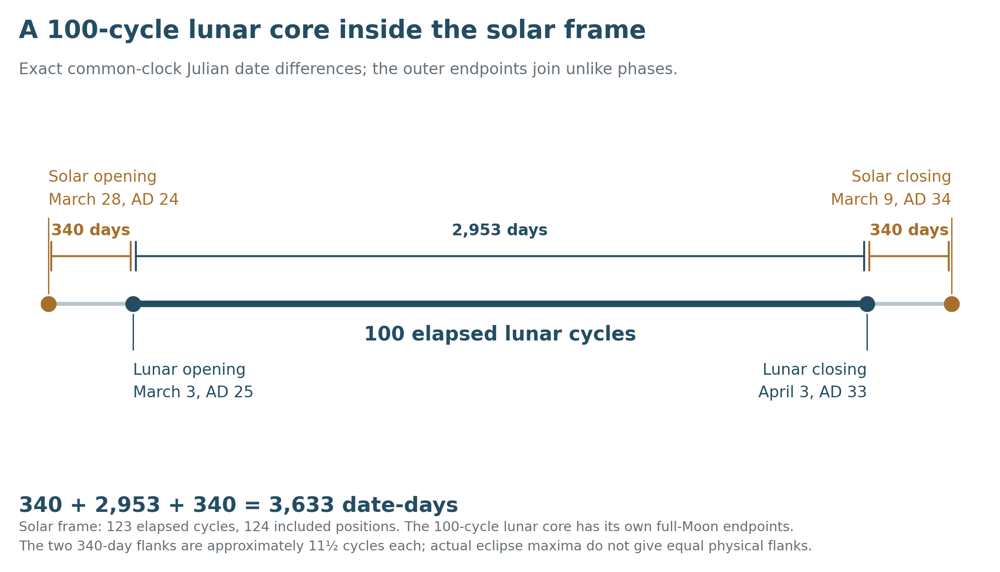
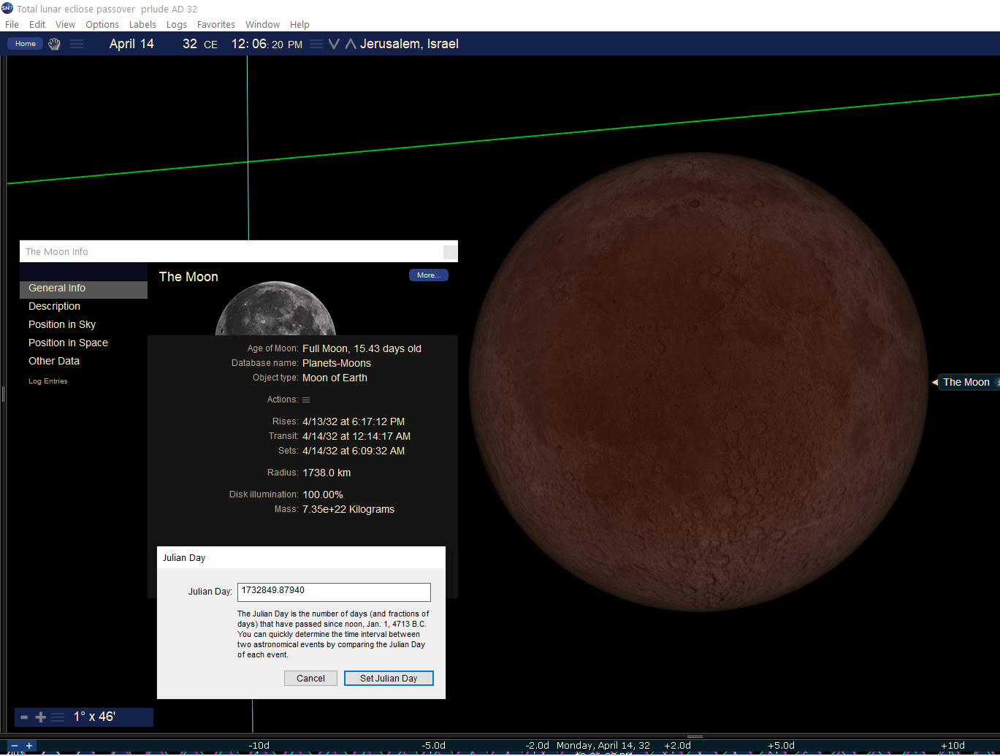
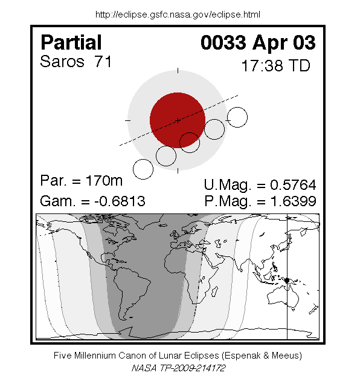
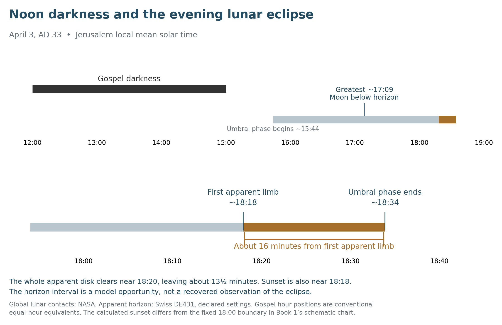
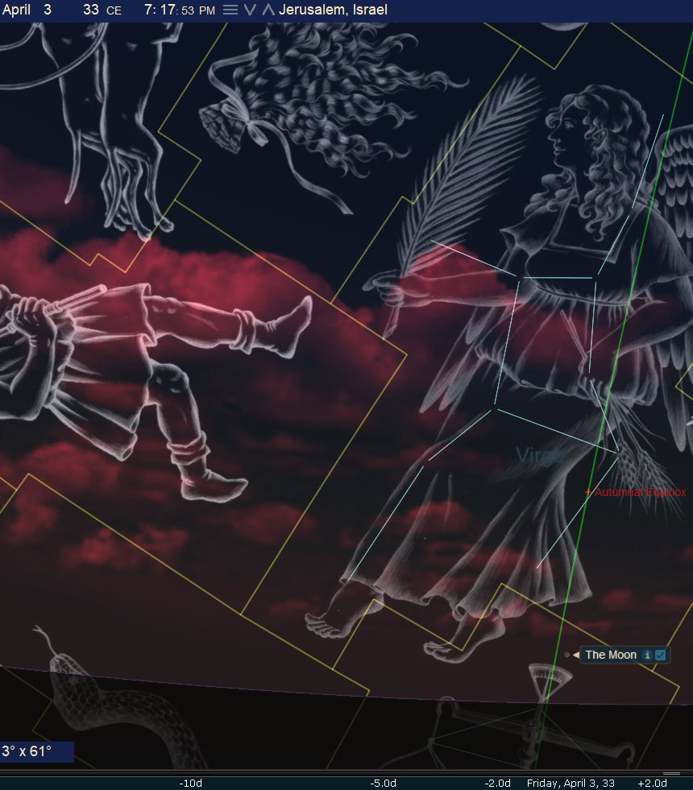

The Moon Beside the Cross
Book 2 · Celestial Signs of the First Advent · Chapter 10
The full Moons before the Passion and the eclipse at its evening boundary
“It was now about the sixth hour, and darkness came over all the land until the ninth hour.”
— Luke 23:44, BSB[1]
The darkness at the Cross and the eclipse of the evening Moon belong to the same day in the preferred AD 33 chronology. They are different events. The Gospel describes darkness over the land while Jesus hangs on the Cross. The astronomical record places the Moon within earth’s shadow later, with the last part of its umbral eclipse reaching Jerusalem’s evening horizon.
I read them together because Christ’s death concerns the whole creation. The heavenly witness need not begin with what the people in Jerusalem could see. An eclipse can occur below their horizon and still belong to the testimony of the heavens. Whether its ending phase was recognized locally is a further question, which deserves its own calculation.
The earlier lunar eclipses give that evening a wider setting. A spring and autumn pair in AD 14 returns through later cycles. Six total eclipses between AD 25 and AD 32 precede the partial eclipse on Friday, April 3, AD 33. The resulting seven-member comparison spans 100 lunar cycles inside the solar frame of the preceding chapter.
The lesser light and its witness
Psalm 74 places the lights within God’s work of salvation and His rule over day and night:
“The day is Yours, and also the night; You established the moon and the sun.”
— Psalm 74:16, BSB[2]
Genesis gives the greater and lesser lights their respective rule. In the interpretation developed here, I place the Moon beside John the Baptist’s role as a witness who precedes Christ. John’s Gospel says that the Baptist came to testify concerning the light. That gives the comparison its direction: the witness points beyond himself to the One who is coming.
This is a reading I bring to the luminaries. John’s Gospel does not identify the Baptist as the Moon. Its account of testimony allows me to contemplate the lesser light alongside him, just as the greater light can be read beside Christ. Their created movements can carry a relationship already intelligible from Scripture.
The lunar sequence matters within that relationship because it repeatedly approaches the seasons of Passover and Tabernacles, then reaches the evening of the Cross. The heavens accompany a history whose meaning Scripture gives us.
The middle year and its two eclipses
Within the historical year labels used in this book, AD 14 stands 19 years after 6 BC and 19 years before AD 33. It is the middle year of that bracket. The calculation does not recover the exact midpoint between Jesus’ birth and death instants, and it uses the historical 6 BC framework, distinct from the received birth and naming framework of Book 1.[3]
NASA records two total lunar eclipses in AD 14. Their global classification and Jerusalem’s share of each event need to be stated separately:
| Julian date | Global type | Jerusalem setting in the stated model |
|---|---|---|
| Wednesday, April 4, AD 14 | Total | Greatest phase about 04:09 LMT; totality occurs before dawn |
| Thursday, September 27, AD 14 | Total | Greatest phase about 06:46 LMT; the Moon sets before totality begins |
The September eclipse is a morning event at Jerusalem. Its earlier partial phase lies above the modeled horizon, but its total phase does not. Calling it an evening totality there would give the reader the wrong sky.[4]
The supplied April scene puts the eclipsed Moon near the Woman’s feet. Its Julian-day panel identifies a moment close to NASA’s greatest eclipse. The displayed software clock reads about 04:48, using UTC plus three hours; the same instant is about 04:09 Jerusalem local mean solar time. It is a scene before dawn, rather than a total eclipse at sunrise.
The Woman belongs to the traditional Virgo artwork, while the Moon’s formal IAU constellation is Libra. The familiar picture and the modern boundary describe different aspects of the scene. I retain both because the proposed reading depends on the picture, while the region can be checked from coordinates.


Chapter 7 placed this middle year beside the Egyptian Great Year comparison. Here the point is the lunar return. The spring and autumn events recur after 223 lunar cycles, in AD 32, and after 235 cycles, in AD 33. The latter pair consists of partial eclipses:
| Season | AD 14 | After 223 cycles | After 235 cycles |
|---|---|---|---|
| Spring | April 4, total | April 14, AD 32, total | April 3, AD 33, partial |
| Autumn | September 27, total | October 7, AD 32, total | September 27, AD 33, partial |
The 223-cycle comparison is a Saros return, roughly 18 years and 11 days. The 235-cycle comparison is the Metonic relation, roughly 19 years. The Metonic return brings the Moon back near the same season and calendar date; it does not by itself determine whether an eclipse will be total or partial. The catalog supplies the actual types in this table.[5]
The autumn partial of AD 33 remains part of that fuller record. The seven-member sequence below ends at the Passion because that is the subject being followed, not because the Moon ceased to bear further signs after April.
Six totals and the partial at the Cross
From March 3, AD 25 through April 3, AD 33, the complete catalog contains 21 lunar eclipses: six total, nine partial, and six penumbral. The comparison below follows all six totals and then the partial eclipse on the preferred Crucifixion date. Other partial and penumbral events occur between them.[6]
All dates are Julian. The table gives the global eclipse type and the portion of the umbral phase available above Jerusalem’s smooth modeled horizon. “Below the horizon” concerns the event’s local geometry; it does not remove the event from the heavenly record.
| Julian date | Global type | Formal Moon region | Jerusalem umbral opportunity |
|---|---|---|---|
| March 3, AD 25 | Total | Virgo | Before dawn; the Moon sets during totality |
| August 27, AD 25 | Total | Pisces | Below the horizon |
| December 20, AD 28 | Total | Gemini | Ends before moonrise |
| June 14, AD 29 | Total | Sagittarius | The whole umbral phase lies above the horizon |
| April 14, AD 32 | Total | Libra | Below the horizon in daylight |
| October 7, AD 32 | Total | Aries | Ends before moonrise |
| April 3, AD 33 | Partial | Libra | Closing phase reaches the rising Moon |
The opening March eclipse of AD 25 is a late-winter full Moon. It should not be called a Passover eclipse merely because it belongs to this comparison. The spring and autumn festival associations of the AD 14 and AD 32 pairs remain proposed calendar placements, with their month beginnings and intercalation rules understood.[7]
I use Jerusalem mean solar time, abbreviated LMT, when a local clock is needed. At the stated longitude it is UT plus about 2 hours and 21 minutes. The calculations also declare the pressure, temperature, apparent lunar limb, and horizon convention. A software clock printed on an older plate is not automatically this same clock.[8]
A hundred lunar cycles inside the solar frame
The opening eclipse on March 3, AD 25 and the closing eclipse on April 3, AD 33 differ by 100 lunar-index steps. Their named dates are 2,953 days apart. This is an independently measured 100-cycle window, comparable in that respect to the earlier Exodus and Conquest windows.
Placed inside Chapter 9’s solar endpoints, it gives an exact date arrangement:
340 + 2,953 + 340 = 3,633 days.


The equal outer date spans run from the new-Moon eclipse of March 28, AD 24 to the full-Moon eclipse of March 3, AD 25, and from the full-Moon eclipse of April 3, AD 33 to the new-Moon eclipse of March 9, AD 34. Each outer interval joins unlike phases and is approximately eleven and a half lunar cycles. Each is exactly 340 days only when the same clock reference is compared on the named dates.[9]
This clarifies the connection with the earlier 12 + 100 + 12 expression. There is a real 100-cycle lunar core, with its endpoints now specified. The outer flanks are not twelve complete elapsed cycles each. Chapter 9’s solar frame still spans 123 elapsed cycles, or 124 included month positions; its inclusive partition remains a different count.
The physical times of greatest eclipse keep their own values. The lunar core’s maxima are about 2,953.471 TT days apart. Their interval does not become exactly 2,953 physical days because their civil dates have that integer difference. The pattern can be read with both measures visible.
The 41-cycle rhythm also returns. December 20, AD 28 to April 14, AD 32, and June 14, AD 29 to October 7, AD 32, each give 1,211 common-clock date-days. These are the same units used in Chapter 9. The partial eclipse of December 9, AD 29, which is outside the chosen seven, gives another 41-cycle, 1,211-date-day link to April 3, AD 33.[10]
The intervals are available for comparison with the prophetic half-week. Their measured length remains 1,211 days, rather than Revelation’s 1,260. No change of month name or day boundary supplies the missing 49 elapsed days.
The feast year before the Passion
The AD 32 pair brings the study close to the Cross. The April 14 total eclipse reaches greatest phase around 11:27 LMT, while the Moon is below Jerusalem’s horizon. The October 7 total reaches greatest around 15:09 LMT. Its umbral phase ends around 16:56, before moonrise near 17:41. Jerusalem therefore receives neither event’s totality above its horizon.[11]
The supplied April close view makes the total eclipse easy to inspect. It also shows why a rendered Moon must not be mistaken for a local observation: the plate’s own information panel puts moonset earlier that morning. The scene displays an event occurring elsewhere in the sky, with the ground and ordinary daylight appearance suppressed.
I place this spring and autumn pair beside the anticipation in John’s Gospel. In John 6, Passover is approaching, the crowd wants to make Jesus king, and He withdraws. In John 7, the approach to Tabernacles includes His words about a time not yet fully come. Those passages supply the narrative setting for my reading of a witness that precedes the Passion; the eclipses do not independently date the Gospel scenes.[12]
The noon-to-noon date interval from April 14, AD 32 to April 3, AD 33 is 354 days. The eclipses are twelve lunar cycles apart, but their actual greatest-to-greatest interval is about 354.237 TT days. The year-and-day comparison concerns a lunar-year setting around the coming Passion. The exact 354 belongs to the date count; it is not a year-to-the-hour identity between the two eclipse maxima.
The two total phases last 100.6 and 96.3 minutes in NASA’s catalog. Together that is 196.9 minutes, about 3 hours and 17 minutes. I place the combined darkness of the Moon beside the Gospel’s roughly three-hour darkness of the Sun. The association preserves the difference from 180 minutes; the two durations do not become an exact measurement of the noon darkness.


The darkness and the evening eclipse
A lunar eclipse occurs at full Moon, when earth lies between the Sun and Moon. A solar eclipse requires new Moon, with the Moon between earth and the Sun. Neither the April 3 lunar eclipse nor the March 19 solar eclipse explains the Gospel darkness at noon. They are separate entries in the account.[13]
The distinction leaves the theological joining intact. The Gospel reports the darkness of the land during Christ’s suffering and His death near the ninth hour. The astronomical record then supplies a partially eclipsed Moon at the day’s evening boundary. I receive the reported darkness as part of the scriptural testimony, while calculating the ordinary eclipse on its own terms.


NASA places greatest lunar eclipse at 14:47:51 UT, or about 17:09 Jerusalem LMT, on April 3. The Moon has not yet risen at Jerusalem. Its 0.5764 umbral magnitude describes the fraction of its diameter immersed in earth’s umbra at that global maximum. It does not describe the fraction of its surface area, and it is not the magnitude at Jerusalem moonrise.[14]
The end of the umbral phase is near 18:34 LMT. In the declared horizon model, the Moon’s first apparent upper limb rises near 18:18, almost together with sunset. This gives approximately 16 minutes between the first limb’s appearance and the umbral phase’s end. Once the whole apparent disk has cleared the same horizon, about 13½ minutes remain.[15]


These figures describe a geometrical opportunity. A Moon on the horizon is seen through a long atmospheric path. Hills, haze, extinction, refraction, and the uncertainty in ancient earth rotation affect what a person could discern. The first sliver above an ideal horizon is also different from an unmistakable view of the shadowed part of the lunar disk.
The calculation supports a short ending interval, rather than 45–60 minutes of umbral eclipse above Jerusalem. It does not establish that people there recognized an eclipse. Its occurrence and possible heavenly meaning remain available even if no one locally perceived the shadow.[16]
The Woman the Balance and the Lamb
The closing eclipse returns the Moon to the region beside the Woman’s feet in the traditional artwork. Its formal region is Libra, the Balance. The preceding autumn total lies in Aries, the Ram, which I read through the Lamb imagery. The pictures gather the Woman, the Balance, and the Lamb around a sequence whose final member reaches the Sabbath boundary.


The artwork helps the eye follow that reading. It does not turn the entire constellation Virgo into a precise outline supplied by Revelation, or make the scales an eclipse calculation. The source image’s clock remains in its original setting; the separate timeline gives the declared LMT eclipse window.[17]
Peter’s use of Joel at Pentecost places the darkened Sun and blood-colored Moon within the proclamation of the day of the Lord. I hear a resonance between that language and the Passion sky. The comparison does not require the Moon to have looked conspicuously red from Jerusalem, or make one eclipse the complete fulfillment of everything Joel describes.[18]
The six totals followed by the selected partial also invite a work-and-rest reading. Six members precede the seventh; the final Moon rises near Friday’s sunset as the Sabbath begins. John records Christ’s declaration that the work is finished before the burial and the approaching Sabbath. I place that completion beside the lunar sequence, while keeping the chosen seven distinct from the full eclipse catalog.[19]
The interval itself is a little over eight ordinary years. Seven selected events do not make it seven elapsed years. The proposed rest-sign comes from their ordered comparison and its Passion endpoint, with the actual dates retained.
The birth and Passion comparisons meet
Chapter 3 examined the three lunar eclipses in 1 BC. Each has a counterpart 399 lunar cycles later: January 10, 1 BC to April 14, AD 32; July 5, 1 BC to October 7, AD 32; and December 29, 1 BC to April 3, AD 33. Counting both indexed endpoints gives 400 included positions across 399 elapsed cycles.[20]
This is one way the birth-side lunar material joins the Passion-side material. It uses the received chronology already identified in Chapter 3. The historical 6 BC anchor used for AD 14’s middle-year comparison keeps its separate role.
The authorized 77 × 153 = 11,781-day chart in Book 1 also keeps its endpoints: January 1, AD 1 at midnight to April 4, AD 33 at midnight. The eclipse-date interval from December 29, 1 BC to April 3, AD 33 is 11,783 days. These different comparisons should not be made equal by moving their boundaries. Crucifixion Friday is the final complete civil day in the authorized 11,781-day frame; noon is within that day.[21]
The Moon and the Manger brought us toward Christ’s coming in the flesh. The Moon beside the Cross brings us toward the offering of that flesh. The relation is Christological before I ask how its months and days can be counted. The counts let us examine the proposed witness in a definite form.
A witness beyond the horizon
I do not make human recognition the condition of a sign’s meaning. Christ’s death reconciles things in heaven as well as things on earth. Revelation shows the heavenly company gathered around the slain Lamb. That is a real audience within the perspective from which I am reading these events.[22]
The unseen AD 32 eclipses and the AD 33 eclipse at the edge of visibility belong naturally within that view. Their very concealment may be part of the testimony. The work on earth is public, yet its reach exceeds the understanding of those standing nearby. Heaven can receive a witness whose meaning people learn later through revelation.
The calculations tell us where the Moon was and when the shadow left it. Scripture tells us whose death we are considering. I bring those fields together because I believe their Maker can order them toward one purpose. The earthly horizon measures the portion available from one place; the heavenly perspective keeps the larger event in view.
The next chapter follows the bright Morning Star and the celestial procession around Resurrection and Ascension. We will continue with the same Lord whose death the darkened lights have accompanied, now looking toward His rising and reception in heaven.
Source notes
1. Luke 23:44–46, Berean Standard Bible. The opening quotes verse 44 exactly. The conventional noon-to-about-15:00 display translates the sixth-to-ninth-hour language approximately; it is not a recovered set of modern clock readings. The death follows the reported darkness. Return
2. Psalm 74:12–17, with verse 16 quoted exactly; Genesis 1:14–18; John 1:6–9. The BSB footnote offers “light” for “moon” in Psalm 74:16. The Moon–Baptist and Sun–Christ associations are the author’s theological reading, not identities explicitly assigned by John’s prologue. Return
3. Civil year-label arithmetic: 6 + 14 − 1 = 19, and 33 − 14 = 19. The received 1 BC to AD 14 count is 14, not 19. Repository File 13, Christological Matrix, controls the distinct birth states and the preferred AD 33 / allowed AD 30 Passion chronologies. AD 34 is not a Passion replacement. Return
4. NASA/GSFC AD 1–100 lunar catalog, 04856–04857; the model and separate DE431 check accompany the package. At Jerusalem on September 27, AD 14, apparent upper-limb moonset is about 05:50 LMT, before modeled totality begins around 05:58. The April original, archive IMG0069, prints JD 1726264.57508 and 04:48:07; the JD gives about 01:48 UT and 04:09 LMT, identifying its UTC+3 software display. Its filename’s “sunrise” description is not the time of greatest eclipse. Return
5. The April and September AD 14 lunation indices are −24561 and −24555. Their AD 32 counterparts are −24338 and −24332, differences of 223; the AD 33 counterparts are −24326 and −24320, differences of 235. The common-date differences are 6,585 days for each Saros comparison, and 6,939 / 6,940 days for the respective Metonic comparisons. See NASA’s lunar periodicity explanation. Types and actual instants are catalog entries, not consequences of rounding years. Return
6. NASA IDs 04884–04904 inclusive give the 21-event frame. All six totals are included; the chosen seventh is 04904. Nine partial events include that closing member. The six penumbral entries include NASA’s Ne type. The complete CSV and original rows are retained. The September 27, AD 33 partial, 04905, lies outside this April endpoint. Return
7. The seven selected dates have noon date references 1730251, 1730428, 1731639, 1731815, 1732850, 1733026, 1733204. Weekdays and regions were recomputed; the raw files contain conflicting weekday labels. Formal Moon regions at greatest eclipse are Virgo, Pisces, Gemini, Sagittarius, Libra, Aries, Libra. Spring/autumn feast names are working calendar associations, not NASA fields. A historical first-crescent date and a 364-day solar date need their own declared calendar rules. Return
8. Site 31.778° N, 35.235° E, elevation 754 m; pressure 927 hPa; temperature 15°C; smooth level horizon, no terrain or extinction. LMT = UT + 2h20m56.4s. NASA rounded ΔT is imposed separately for each event. The main catalog check uses explicit Moshier; the regional cross-check uses official Swiss compressed DE431 files with returned flags verified. Swiss documentation. The models’ eclipse maxima differ by seconds to roughly a minute; their exact outputs are retained separately. No printed second is claimed as ancient observational precision. Return
9. NASA lunar indices −24426 to −24326 give 100 elapsed cycles. Their common-noon references give 1733204 − 1730251 = 2953 days. The solar endpoints are 1729911 and 1733544: 340 + 2953 + 340 = 3633. Mixed new-Moon/full-Moon flanks are approximately 11½ cycles each. Lunar greatest-to-greatest time is 2953.470891 TT days. The exact date nesting neither certifies equal physical maxima intervals in the outer flanks nor changes the 123-cycle solar count into 124 elapsed cycles. Return
10. The two stated total-to-total links each have 41 lunar-index steps and 1211 named-date days. August 27, AD 25 to December 20, AD 28 gives another such link. The partial December 9, AD 29 to April 3, AD 33 comparison also gives 41 / 1211, as already discussed in Chapter 7. Physical maxima intervals differ from the integer date counts. Adding 49 days to Good Friday reaches Friday May 22, not automatically Pentecost; Book 1’s Sunday Omer construction gives May 24 under its stated rule. Return
11. NASA 04902 and 04903 have total-phase durations 100.6 and 96.3 minutes. The independent regional model places October 7’s umbral end about 16:57 LMT and moonrise about 17:41; the rounded catalog-centered estimate is about 16:56. Both exclude umbral visibility above the adopted horizon. A remaining penumbral phase is a different question. Original IMG0086 prints April 14, AD 32, 12:06:20 and JD 1732849.87940: its clock is UTC+3, about 11:27 LMT. Ground/daylight suppression is necessary to display the Moon there. Return
12. John 6:4, 14–15; John 7:2–8, 30. The feast scenes supply the comparison; the proposed AD 32 placement is not independently established by an eclipse. April 14, AD 32 to April 3, AD 33 is 354 common-clock date-days and twelve lunar-index steps; the catalog maxima span 354.237002 TT days. Combined totality is 196.9 minutes = 3h16m54s, differing from 180 minutes by 16.9 minutes. Return
13. Luke 23:44–46; John 19:28–42. The March 19 solar event, Gospel noon darkness, and April 3 lunar eclipse remain distinct. A full-Moon lunar eclipse cannot cause daytime solar darkness, and an ordinary new-Moon solar eclipse cannot occur at the Passover full Moon. Return
14. NASA, April 3, AD 33 detailed contact plot, visually checked: greatest 17:37:53.1 TD / 14:47:51.1 UT; U1 13:22:50 UT; U4 16:12:57 UT; umbral duration 2h50m07s; ΔT 10202 s; umbral magnitude 0.5764. The plot labels VSOP87/ELP2000-85 and the Danjon shadow rule. The smaller NASA global map is also supplied archive asset IMG0156; its bytes match the current NASA file. The display PNG changes format only; the original GIF is retained. Return

15. With the declared DE431 horizon settings, first apparent upper-limb rise is approximately 18:17:56 LMT; apparent lower-limb rise, when the whole disk has cleared, is about 18:20:23. NASA U4 is 18:33:53 LMT. The intervals are therefore about 15.96 and 13.51 minutes. Sunset is about 18:18:10. The approximately 18:18 calculated sunset is distinct from Book 1’s fixed 18:00 schematic boundary. Book 1, The Heavens and the Ascended Lamb retains the same approximately sixteen-minute first-limb interpretation. Return
16. The Moshier shadow calculation ends about 1m24s earlier than NASA U4; the DE431 shadow calculation ends about 33s later. Their outputs are not substituted for the primary NASA contact. A separate comparison of lunar ephemerides is disclosed because ancient Moon positions are more sensitive than the earlier planetary tests. Local terrain, refraction, extinction, and ΔT uncertainty remain distinct from numerical agreement. A geometric opportunity does not establish historical detection. Return
17. Original archive IMG0442. Traditional figure placement is not an IAU boundary assignment or a recovered ancient observation. The image’s original 19:17 software display is retained without being relabeled as Jerusalem LMT. The caption uses it for the Woman-and-Balance placement, not for an exact umbral-contact clock or a claim of visible reddening. Return
18. Joel 2:30–32; Acts 2:16–21. Peter’s proclamation and the author’s proposed application are distinguishable. Redness caused by an atmosphere at the horizon is not by itself proof that the umbra was recognized. Return
19. John 19:30–42. The six-then-one work/rest association is the author’s interpretation of the selected ordering. The first-to-last named-date interval is 2953 days, a little over eight Julian years, not seven ordinary years. Return
20. Birth-side NASA 04821–04823 to Passion-side 04902–04904: each difference is 399 lunar-index steps. Their date differences are respectively 11783, 11782, 11783 days. Counting indexed endpoints gives 400 positions, not 400 elapsed months. Chapter 3 supplies the birth-side calendar, M44 and circumcision discussions; those are not re-derived here. Return
21. 77 × 153 = 11781. January 1, AD 1 opening to April 4, AD 33 opening preserves the authorized Book 1 chart. December 29, 1 BC opening to April 3, AD 33 opening is 11783 days, a separate interval. The 180-day proposed circumcision comparison, 280-day birth/conception comparison and their distinct endpoints remain in Chapter 3; none supplies a new death-at-noon endpoint. Return
22. Colossians 1:16–20; Ephesians 3:8–11; Revelation 5:6–14. These give the cosmic reach and heavenly audience of redemption. The proposed meaning of particular eclipses is the author’s reading within that perspective. Return
Scripture quotations are from the Berean Standard Bible (BSB), public domain.
← Previous: Chapter 9 — The First and the Last
Book 2 contents
Next: Chapter 11 — The Morning Star and the Ascended Lamb →